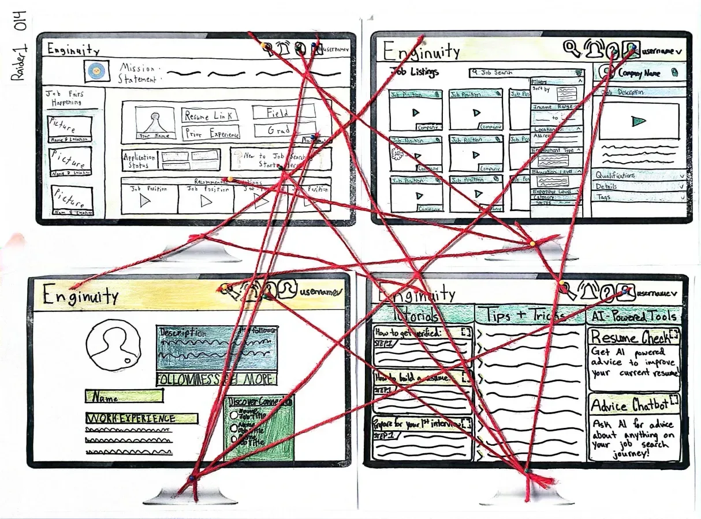

Group project01 / ABOUT ME
Hi, I’m Elijah. Computer Science & IT
I'm a Computer Science student at Texas Tech University with hands-on experience in customer service and IT technical support. I'm passionate about cybersecurity and practical problem-solving, with a strong interest in web development and systems administration.
Based in Lubbock, Texas
TEXAS TECH UNIVERSITY

Elijah Cochran
Edward E. Whitacre Jr. College of Engineering
Web developmentFront-end projects & prototypes
IT & technical supportHardware, software & networking
CybersecuritySystems & network security
02 / PROJECTS
Featured Projects
Coursework, collaborative builds,
and personal projects.
03 / WORK EXPERIENCE
Work Experience
Customer service, IT support,
and hands-on technical roles.
Past
October 2024 - August 2026
ToGo | Delivery | Catering
Darden Restaurants | Olive Garden
Handled high-volume orders, coordinated catering and delivery logistics, and provided customer service in a fast-paced team environment.
Past
Summer of 2023 & 2024
Technology Specialist
Bushland ISD | IT Department
Provided technical support, diagnosed hardware and software issues, and assisted with network maintenance and deployment projects.
04 / EDUCATION
Academic Background
Computer Science coursework at Texas Tech University, dual-credit associate studies, and a strong academic foundation.
EDUCATION
2025 - 2029 · Enrolled
Bachelor's Degree in Computer Science
Texas Tech UniversityCurrently enrolled full-time in Computer Science.
2021 - 2025 · Graduated
Associate's Degree in General Studies
Amarillo Community CollegeEnrolled through and completed the Dual-Degree program. Cumulative 4-Point GPA of 3.508.
2021 - 2025 · Graduated
High School Diploma
Bushland Independent School DistrictGraduated in the top 18% of my class. Awarded Superintendent Scholar all four years. Cumulative 5-Point GPA of 4.36.
RECOMMENDATION
Elijah Cochran has established himself as an outstanding student among the graduating class of 2025…
Full recommendation letter available upon request.
05 / CONTACT
Get in Touch
Feel free to reach out regarding internship opportunities, collaborative projects, or questions.